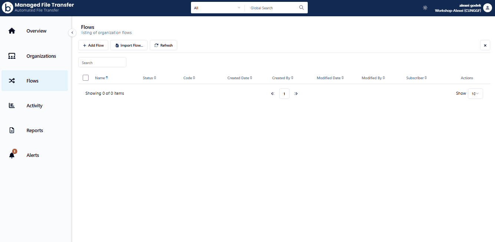
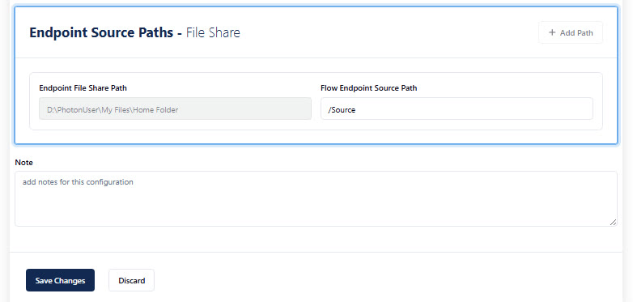
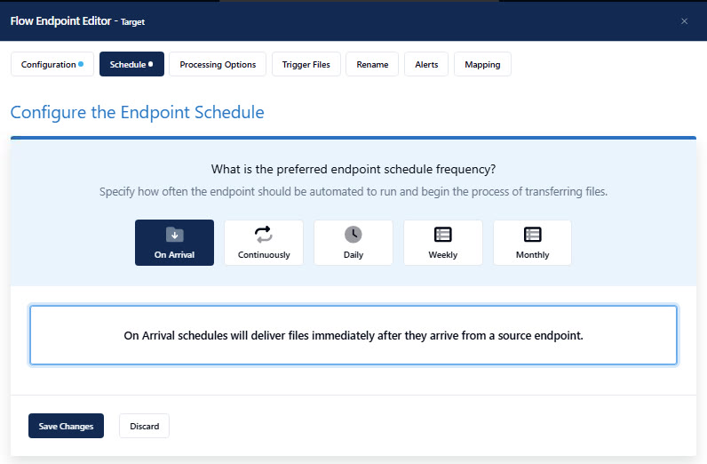
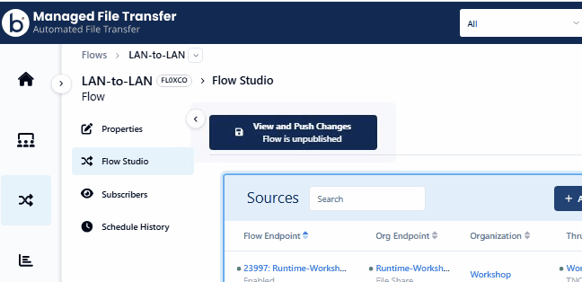

Build the LAN-to-LAN flow
Now we will connect the endpoint to a flow by subscribing the organization. Once subscribed we can add the endpoint as a Source and as a Target, simulating a LAN to LAN workflow. This shows how the local runtime can move the file without the file ever leaving the local network, but orchestrated by the cloud.
⏰ ~5 minSelect Flows and add the Runtime endpoint to Source and Target
In the left nav, select Flows, then Add Flow and name it LAN-to-LAN.

Subscribe your organization to the flow, then open it in Flow Studio. A LAN-to-LAN flow has two panels: a blue Source panel and a green Target panel.
- In the blue Source panel, click Add Flow Endpoint, select your Runtime endpoint, then click Add Flow Endpoint again to confirm.
- In the green Target panel, click Add Flow Endpoint, select the same Runtime endpoint, then click Add Flow Endpoint again to confirm.
Configure the Source flow endpoint
Click on the Source flow endpoint, then scroll to the bottom of the Flow Endpoint Editor — you'll see Endpoint Source Paths. The Endpoint File Share Path is already defined with the root path you set on the endpoint.
Update the Flow Endpoint Source Path by adding Source — the subfolder you created earlier with the test file — then click Save Changes.

Configure the Target flow endpoint the same way
Repeat for the target side, pointing it at your Target subfolder. Both directions use the same runtime and the same File Share Endpoint — they're just two independent flow endpoints.
Before you click Save Changes, click Schedule at the top of the Flow Endpoint Editor, and change the schedule from Continuously to On Arrival. Then click Save Changes.

Push your changes
To make this flow live you need to push the changes. You should see No Pending Changes and a confirmation that your changes were pushed successfully.
